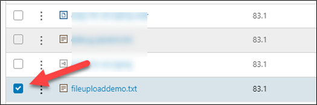
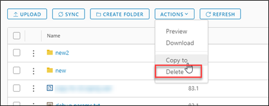
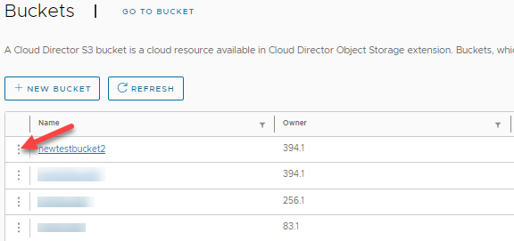
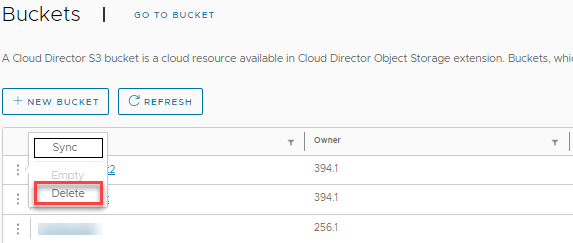
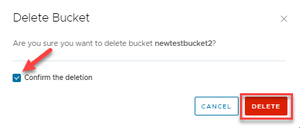

Delete an object or a bucket
Delete an object¤
-
To delete an object, click the check box of the object you want to delete.

-
Under ACTIONS select Delete.

-
Review the objects you want to delete and select Delete.

Delete a bucket¤
-
To delete a bucket, click the ellipsis next to the bucket you want to delete.

-
Select Delete.

-
Confirm the deletion of the bucket you want to delete and select Delete.

Last update:
January 12, 2023